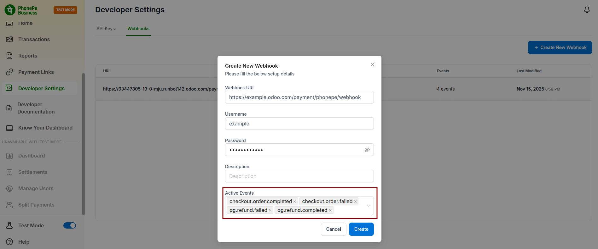
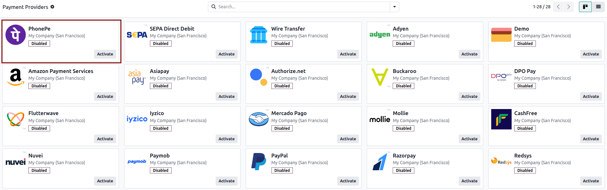
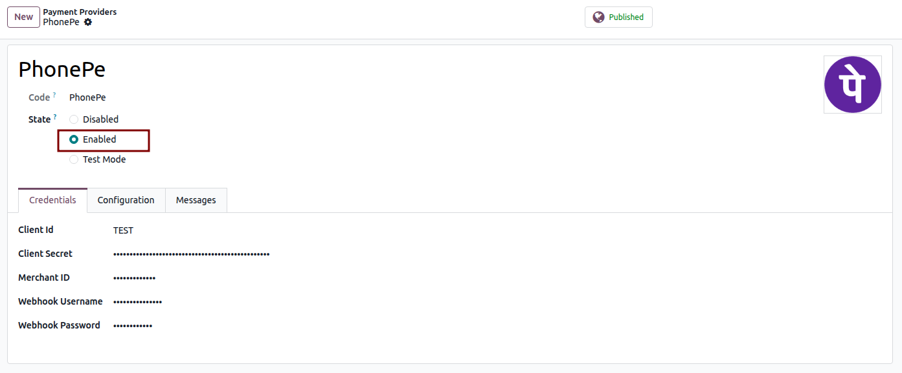
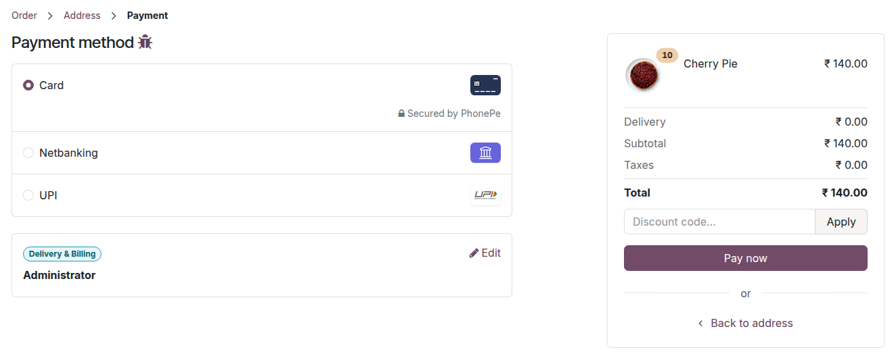

For your onboarding, we invite you to book an appointment using the link provided. During this session, our team will guide you through the onboarding steps and assist with any setup or clarification you may need:
https://www.odoo.com/book/india-payment-provider
Create your PhonePe merchant account using the link below and complete the onboarding process to receive your credentials.
https://www.odoo.com/r/phonepe
Make sure to note your Environment — use the Sandbox (UAT) credentials for testing and switch to Production once you’re ready to go live.
/payment/phonepe/webhook as the webhook endpoint.
https://example.odoo.com/payment/phonepe/webhook

Save your webhook settings to allow PhonePe to send real-time payment and refund updates to your Odoo instance.


After saving, the PhonePe payment options (UPI, Cards, Net Banking, etc.) will automatically appear on your Odoo website checkout page, depending on your configuration in the PhonePe dashboard.

For any queries or support needs, kindly schedule an appointment via the link below. This will allow our team to address your concerns directly and provide the necessary guidance:
https://www.odoo.com/book/india-payment-provider